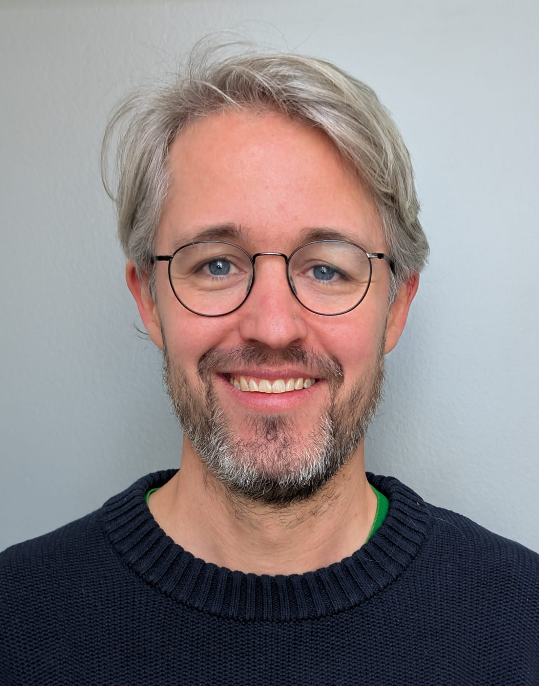

Piet van den Berg
Principal Investigator
Piet leads the Evolutionary Modelling Group. His research focuses on microbial evolution (antibiotic resistance, evolvability, mutational robustness) as well as human cooperation and cultural evolution. The group works on a wide range of topics and collaborates closely with several empirical labs at KU Leuven and beyond.
Outside of work: Reading, cooking, music, movies, travelling, cycling, and sailing.
Fun fact: "Did you know I almost became a movie star at age 12? Studying evolutionary biology was my backup plan."